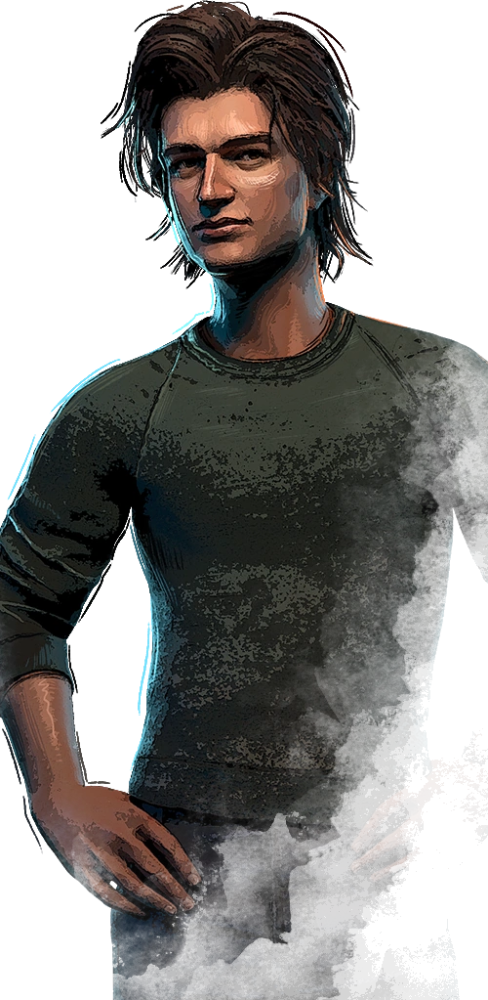
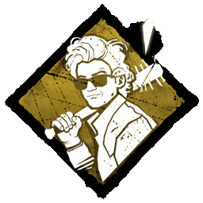
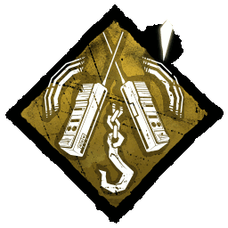
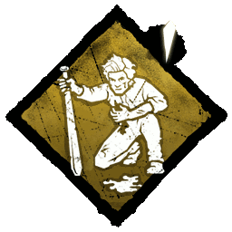
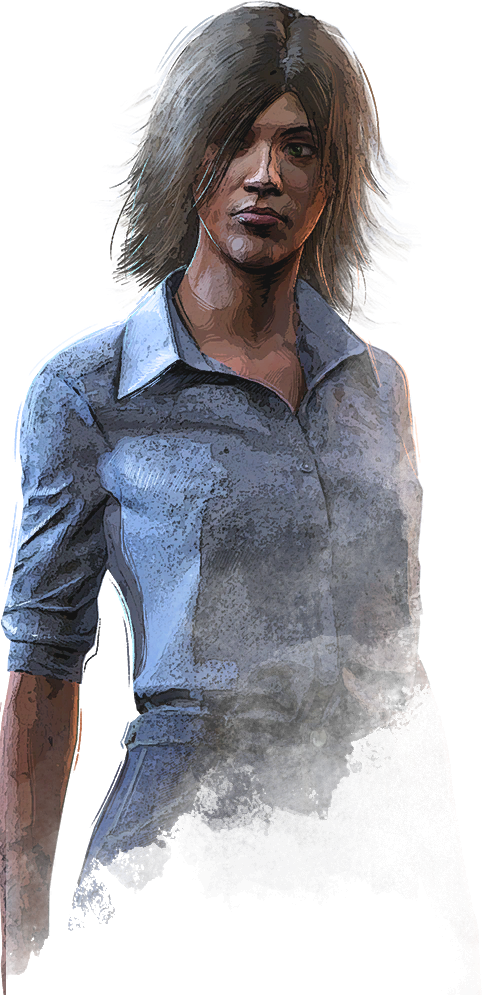
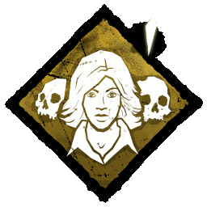
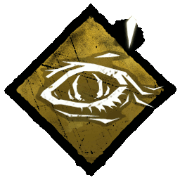
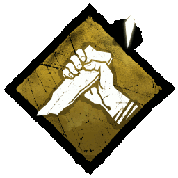

| Steve Harrington  | Popular and arrogant, yet compassionate, Steve Harrington is an unlikely mentor and leader. He often acts as a surrogate big brother to a younger boy named Dustin. He even helped him find his slimy inter-dimensional pet Demogorgon, D'Artagnan. His reputation as a protector grew and he soon became a sort of "babysitter" for a group of kids in Hawkins with a knack for messing around with strange and dangerous things. His courage is unmatched so that he was even able to fend off a Demogorgon when it threatened his friends. One evening he received a call for assistance from his friend Nancy Wheeler. He drove all the way to the Hawkins National Laboratory to see if she was okay. He searched the area but only found her notebook. Before he realised what was happening the ground opened up and a swirl of black mist filled his eyes. When he awakened he was in a strange place that seemed familiar but unfamiliar at the same time. | |
|---|---|---|
|  | Babysitter |
While you have a reputation for being self-centred, you risk it all to help those in need. When you unhook a Survivor, the rescued Survivor will leave neither Scratch Marks nor Pools of Blood for the next 6/4/8 seconds.
"I promised to keep you shitheads safe, and that's exactly what I plan on doing." Steve Harrington |
|  | Camaraderie |
While you are on the Hook in the Struggle Phase, Comaraderie Activates. If another Survivor is within 16 meters of your Hook while Comaraderie is active, the Struggle Phase timer is paused for 26/30/34 seconds. "So,remember once you get in there... pretend like you don't care. There you go, you're learning my friend. You're learning." Steve Harrington |
|  | Second Wind |
You have learnt to avoid awkward situations with parents.
Second Wind'' does not activate if you already suffer from the Broken Status Effect. "Yeah, that's a no." Steve Harrington |
| Laurie Strode  | You never know what really matters in life until you've realised it might end soon. Laurie is one of those who just wants a quiet life in the suburbs, hanging out with friends, family and maybe go on a date or two. Laurie is a typical teenager. You could pass her on the street and not think twice. She does her homework and is liked by her friends, teachers and family. A simple night of babysitting turns into something that will forever change the course of her young life. A knife swooshing through the air. Screams from afar. Noises that plays tricks with her mind. But not Laurie, she’s made of something stronger. Something that won't give up. | |
|---|---|---|
|  | Sole Survivor |
As more of your friends fall to the Killer, you become shrouded in isolation and the Killer's Aura-reading abilities towards you are disrupted. Each time a Survivor other than yourself is killed or sacrificed, Sole Survivor gains 1 Token, up to a maximum of 3 Tokens:
Once you are the last Survivor standing, you benefit from the following effects:
Increases the odds of becoming the Killer's initial Obsession by +100 %. The Killer can only be obsessed with one Survivor at a time. "It was the boogeyman." Laurie Strode |
|  | Object Of Obsession |
A supernatural bond links you to the Killer.
If you are the ObsessionIconHelp obsession.png, your Aura is
automatically revealed to the Killer for 3 seconds every 30
seconds. "He was watching me!" Laurie Strode |
|  | Decisive Stike |
Using whatever is at hand, you stab your aggressor in an ultimate
attempt to escape.
While Decisive Strike is active, performing Conspicuous Actions
will deactivate it for the remainder of the Trial. "There is nothing to be scared of." Laurie Strode |